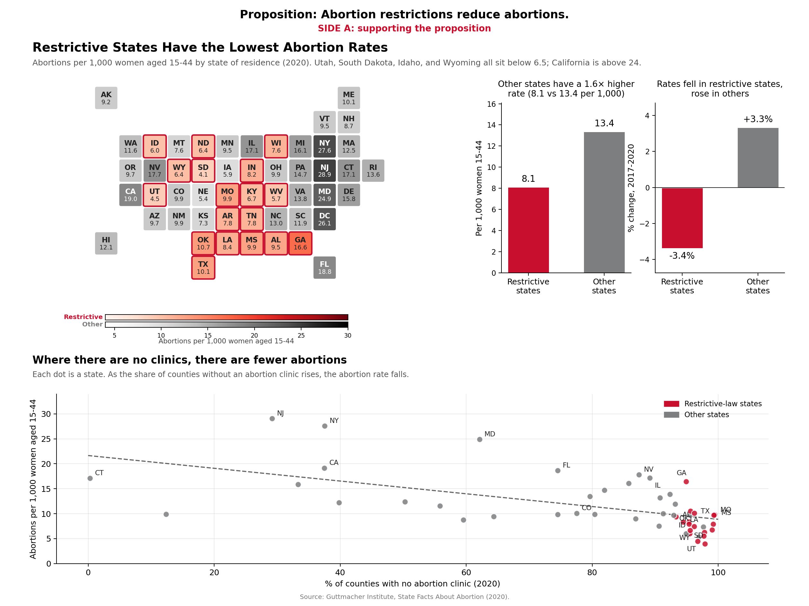
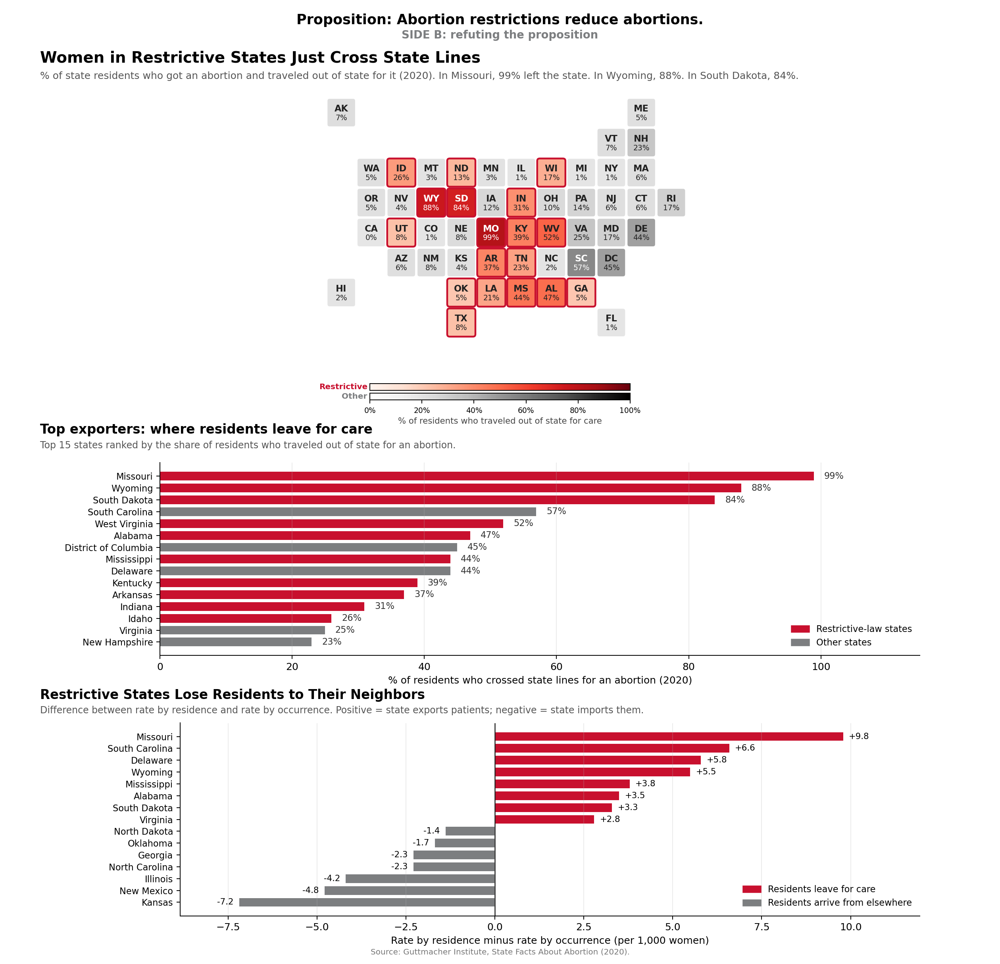

Proposition
Abortion restrictions reduce abortions. Both sides below use the same dataset (Guttmacher Institute, State Facts About Abortion, 2020), but look different based on the column you put on the page.
-2 very deceptive -1 mildly deceptive 0 neutral +1 mildly earnest +2 very earnest
FOR the Proposition

Design Decisions and Rationale
- +1 Picked rate by state of residence, not by state of occurrence. Both columns are in the dataset. Residence rate counts an abortion based on where the woman lives, occurrence rate based on where the procedure happened. So a Missouri woman who gets an abortion in Illinois shows up in MO's residence rate and IL's occurrence rate. Using occurrence would have made restrictive states look near zero because almost nothing happens there, so we went with the more honest column. Side B is built on the gap between the two.
- -2 Title asserts causation from a cross-section. "Restrictive States Have the Lowest Abortion Rates" is true on its face but reads like the laws caused the gap. Nothing in this dataset controls for age, religion, income, or how much demand existed in the first place, all of which line up with the same states. A flatter title would have been "Restrictive states also have the lowest rates."
- -1 Sequential purple colormap with no breaks. No quantile bins, no labeled breaks, just one continuous ramp. The eye does the binning. We also outline restrictive states in orange, so the conclusion ("orange = pale = it worked") gets pre-loaded before the reader looks at the numbers. A flatter version would use quantile bins or grouped means with the breakpoints labeled.
- -1 Two-bar averages with no error bars or population weighting. "1.6x lower" is the mean of state rates, every state counted once, so Wyoming gets the same weight as California. Weighted by women aged 15 to 44, the gap would shrink, since California is large and permissive. The unweighted bars look bigger, so we went with those.
- -1 Showed the 2017-2020 change without saying what it includes. Rates fell 3.4% on average in restrictive states, rose 3.3% in the rest. The bars suggest restrictions caused the drop, but residence rate also moves with teen birth rates, contraception access, and demographic shifts that have nothing to do with law. We didn't break any of that out.
- -1 Dropped DC from the scatter, fit a single regression line. DC has 0% clinic-free counties and a very high abortion rate, so leaving it in flattens the trendline. Calling it an "outlier" is convenient. The remaining 50 points have a real correlation but it's modest, and the dashed line makes it look stronger than it is.
AGAINST the Proposition

Design Decisions and Rationale
- +2 Switched the lead metric to "% who traveled out of state." This is the column that breaks Side A. If restrictions had reduced abortions, the travel rate would be near zero. Instead Missouri is 99%, Wyoming 88%, South Dakota 84%. Nothing cherry-picked about it; the numbers are stark on their own.
- +1 Used the same map structure as Side A. Same tile grid, same purple ramp, same orange outlines on restrictive states. You can flip between the two pages and the states that were pale on A are dark on B. No relabeling tricks, the encoding does the argument on its own.
- 0 Diverging "residence minus occurrence" gap chart. The math is sound: a positive gap means a state's residents got more abortions than were performed in-state, so the difference had to happen somewhere else. The bars make it look like a clean handoff to the neighboring state, which is a stronger claim than what the data supports. Some women travel further, some don't get care at all. We didn't annotate any of that.
- -1 Dropped DC from the gap chart "for scale." DC is an extreme importer (gap of -22.8). Leaving it in compresses the rest of the chart and Missouri at +9.8 ends up looking small. "DC is a city, not a state" is a defensible excuse, but the actual reason is to keep the picture clean.
- -1 Subtitle is assertive, not neutral. "Women in Restrictive States Just Cross State Lines" reads like a verdict. The word "just" papers over the women who can't travel, who are the actual hardest case for the proposition. A flatter version: "Most residents of restrictive states obtained abortions out of state."
- +1 Color encoding kept consistent across pages. Restrictive = red, other = gray, on both pages, with restrictive states outlined in red on the maps for redundant emphasis. Red and gray is colorblind-safe (no red-green pair) and the contrast is strong even in grayscale print. Red is loaded on this topic, which is part of why it works as a persuasive choice on both sides: on Side A the red states read as "the ones that worked," on Side B they read as "the ones whose residents are leaving."
Final Reflection
The surprising part was how little we had to manipulate the data. Guttmacher publishes two abortion rates per state in the same row of the spreadsheet: one by residence, one by occurrence. Both real, both official. Side A is built on residence, Side B is built on the gap between the two (plus the travel column). Picking which column to lead with did most of the persuasion. After that it was sort order, dropping DC, and titles that pointed at causation without quite saying it. We didn't have to make anything up.
The harder part was getting Side A to feel as solid as Side B. The checkpoint feedback was that Side A came across thin: just a map and a scatter. So we added two more cuts that point the same way: side-by-side averages, and the 2017 to 2020 change in residence rate. None of those numbers are fake. They're all real columns. They just stop holding up the moment the travel column shows up next to them.
Our working rule for ethical analysis: if a reader who already knows the dataset would agree with the framing, that's persuasion. If the framing only works because the reader doesn't know what got left out, that's deception. By that test, parts of Side A are borderline (residence rate is fine, the title oversells) and a few moves cross the line (dropping DC, unweighted averages, no controls for demand). Side B is mostly clean because it puts back the column that was missing. The check we'd run on any chart: if you add the missing context back in, does the story change? If yes, the chart owed that context. If no, it's just emphasis, and emphasis is fair.